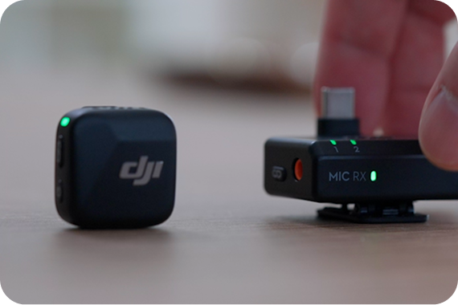
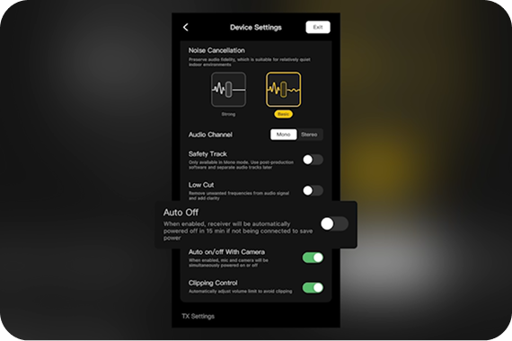
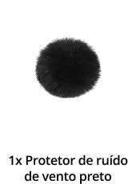
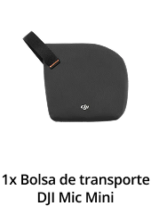
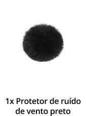
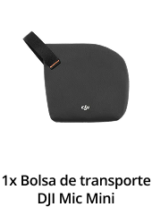
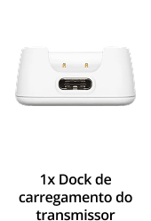
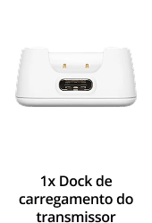

Apresentamos o DJI Mic Mini. Um microfone sem fio que reúne desempenho poderoso em uma estrutura superleve. Garanta uma transmissão estável de áudio de alta qualidade, com bateria de longa duração e conexão direta com o ecossistema DJI OsmoAudio™.
Compacto e superleve
Conforto ao seu alcance
O transmissor do DJI Mic Mini pesa apenas 10 g[5], sendo discreto e confortável de usar. Com várias opções de uso, incluindo fixação magnética ou por meio de presilhas, ele não pesa a gola nem faz com que as camisas de tecido mais fino fiquem marcadas. Garanta um visual mais agradável diante das câmeras.
Cordão
Fixação magnética
Fixação por presilha
Multitarefas! Leve para qualquer lugar
Seu design inovador traz mais praticidade no armazenamento. O case de carregamento tem capacidade para dois transmissores, um receptor, adaptadores para celular e protetores contra vento.
Áudio de alta qualidade
Som com riqueza de detalhes
O DJI Mic Mini é compatível com gravação de áudio omnidirecional, permitindo que o receptor seja vinculado a dois transmissores ao mesmo tempo. Mesmo com múltiplas fontes de som, o microfone consegue reproduzir sons ricos em detalhes e áudio de alta qualidade.
Dois níveis de cancelamento de ruídos
O DJI Mic Mini oferece dois níveis de cancelamento de ruídos que se adaptam a diferentes ambientes.[3]
Ideal para ambientes fechados mais silenciosos, reduzindo ruídos deventilador, ar-condicionado e de reverberação, preservando a definição vocal.
Quando os transmissores são usados com protetores contra vento, o DJI Mic Mini consegue reduzir os ruídos. Ele se destaca em ambientes com vento e em cenários mais barulhentos, como shows e eventos.
Limitação automática para evitar cortes de áudio
Quando habilitada, a Limitação Automática[4] ajuda a reduzir o volume se a entrada de áudio estiver muito alta, evitando cortes e garantindo qualidade de áudio superior. Isso é especialmente útil para criadores de conteúdo.
Ajuste de ganho de 5 níveis
Usando o botão no receptor, é possível ajustar o ganho rapidamente em cinco níveis, tornando a operação conveniente e eficiente.
Gravações Mono e Estéreo
O DJI Mic Mini suporta gravações Mono e Estéreo (canais duplos). O áudio capturado pelos dois transmissores pode ser emitido separadamente ou combinado em uma única faixa, proporcionando maior flexibilidade para a pós-produção.
Faixa de segurança, garantia adicional
Ao habilitar uma faixa de segurança no aplicativo DJI Mimo, o DJI Mic Mini pode fazer gravações com faixas duplas. A faixa principal grava em volume normal, enquanto a faixa adicional grava a 6 dB mais baixo, ajudando a proteger o áudio de problemas como cortes e distorções. O que garante a captura de áudios utilizáveis mesmo com volume irregular durante apresentações ao vivo.
Bateria com duração prolongada
Menor frequência de carregamento: 48 horas de funcionamento com case
O transmissor e o receptor oferecem tempo de funcionamento máximo de 11,5 horas e 10,5 horas[6], respectivamente. O case de carregamento fornece, aproximadamente, 3,6 cargas completas, permitindo um uso prolongado de 48 horas.[1] Isso torna o DJI Mic Mini ideal para viagens longas, entrevistas e outros cenários de uso intenso.
Carregamento rápido em 5 minutos
Com apenas 5 minutos de carregamento, você tem cerca de uma hora de uso do receptor e do transmissor[7]. Com suporte para carregamento rápido de 1,2 C, o receptor e o transmissor podem ser totalmente carregados em, aproximadamente, 100 e 90 minutos, respectivamente[8].
Carregue por
5 minutos
Use por
1 hora
Transmissor com economia de energia automática[9]
O transmissor entra automaticamente no modo Repouso quando não detecta sinais do receptor. Ele será reconectado assim que o sinal for detectado novamente. Esse recurso permite o uso por longos períodos sem precisar ligar e desligar com frequência.
Desligamento automático
No aplicativo DJI Mimo, é possível configurar o desligamento automático do transmissor e do receptor após um período de inatividade. Quando esse recurso estiver habilitado, os dispositivos serão desligados automaticamente, se não estiverem conectados por mais de 15 minutos, preservando a carga da bateria.
Estabilidade anti-interferência e transmissão até 400 metros
Áudios podem ser transmitidos até 400 metros [10] e, graças à poderosa capacidade anti-interferência do DJI Mic Mini, sua gravação permanece estável e cristalina mesmo em ambientes externos movimentados ou em eventos lotados.
Compatibilidade com
o ecossistema Osmo e
com vários dispositivos
DJI OsmoAudio™: conexão direta para qualidade de som superior
O transmissor suporta conexão direta com a Osmo Action 5 Pro, Osmo Action 4 ou Osmo Pocket 3 sem um receptor. O ecossistema de conexão DJI OsmoAudio™ entrega áudio de alta qualidade, simplificando fluxos de trabalho e trazendo maior eficiência ao seu processo criativo.
Compatível com vários dispositivos
O receptor é compatível com câmeras,
smartphones, computadores e tablets.[11]
Quando conectado a uma câmera via cabo de
áudio da câmera (TRS de 3,5 mm), pode ser
ligado/desligado em sincronia. Quando conectado
a um smartphone, permite reprodução externa
sem precisar desconectar e pode ser carregado
pelo dispositivo. Quando o receptor é conectado a
um smartphone e a uma fonte de energia via
porta USB-C, ambos podem ser carregados
simultaneamente durante o uso.[12]
Gravação sem fio facilitada
O DJI Mic Mini é compatível com o drone DJI Neo.
Ao conectar o drone ao aplicativo DJI Fly, é possível
conectá-lo ao DJI Mic Mini pelo Bluetooth de seu
smartphone para gravação de áudio. O aplicativo DJI
Fly elimina o ruído das hélices e junta a faixa de áudio
com a gravação, garantindo um som limpo mesmo
com vídeos em baixa altitude.
Além disso, o transmissor pode se conectar diretamente ao smartphone via Bluetooth, sem a necessidade de um receptor. O DJI Mic Mini oferece uma solução de gravação de áudio mais conveniente para criadores de conteúdo e para fazer gravações aovivo usando aplicativos terceirizados[13] de gravação.
A DJI tem um canal oficial para a compra dos produtos no Brasil
Comprando na Loja Oficial DJI Brasil, você tem a segurança de receber um produto original, regulamentado, certificado pelas agências nacionais competentes e ainda fica 100% protegido pela nossa garantia e assistência.
ATENÇÃO: não nos responsabilizamos por produtos adquiridos em outros canais que não os oficiais.
Na caixa
DJI Mic Mini (2 TX microfone + 1 RX receptor + 1 case de carregamento)
Microfone DJI Mic Mini (1 TX microfone + 1 RX receptor)
Microfone DJI Mic Mini (1 TX microfone preto)
 




Microfone DJI Mic Mini (1 TX microfone branco)
 


- Medidas obtidas usando o DJI Mic Mini (2 TX + 1 RX + case de carregamento) vinculado a um case de carregamento totalmente carregado, com o cancelamento de ruídos desabilitado, durante a gravação de áudio em curta distância em condições livres de interferências, com ambos os transmissores conectados ao receptor e o receptor conectado a uma câmera pelo cabo de áudio da câmera (TRS de 3,5 mm).
- Os transmissores do DJI Mic Mini podem ser conectados diretamente a produtos DJI seletos (um TX para a Osmo Action 4, até dois TX para o Osmo Pocket 3 e Osmo Action 5 Pro). O tempo de funcionamento do transmissor é de, aproximadamente, 7 a 8 horas quando conectado diretamente. Mais produtos DJI serão suportados no futuro.
- Os níveis de cancelamento de ruídos “forte” e “fraco” podem ser definidos pelo aplicativo DJI Mimo ou diretamente na interface do produto ao usar a Osmo Action 5 Pro, Osmo Action 4 ou o Osmo Pocket 3 conectado a um ou mais transmissores pela conexão direta DJI OsmoAudio™. Quando o transmissor se conecta diretamente ao smartphone, o nível de cancelamento de ruídos não pode ser ajustado no aplicativo DJI Mimo, sendo definido como “forte” por padrão.
- Quando o transmissor é usado com o receptor, a limitação automática é habilitada por padrão e pode ser habilitada ou desabilitada pelo aplicativo DJI Mimo. Quando o transmissor é conectado diretamente a um smartphone via Bluetooth, esse recurso é habilitado por padrão e não pode ser desabilitado. O recurso também pode ser habilitado ou desabilitado diretamente na interface do produto ao usar a Osmo Action 5 Pro, Osmo Action 4 ou o Osmo Pocket 3 conectado a um ou mais transmissores pela conexão direta DJI OsmoAudio™.
- O peso de um único transmissor não inclui a presilha magnética.
- Medidas obtidas usando o DJI Mic Mini (1 TX + 1 RX), com o cancelamento de ruídos desabilitado, durante gravação de áudio em curta distância em condições livres de interferências, com o transmissor conectado ao receptor e o receptor conectado a uma câmera pelo cabo de áudio da câmera (TRS de 3,5 mm).
- Medidas obtidas em um ambiente controlado, com nível de carga da bateria dos transmissores e do receptor abaixo de 25%, usando um carregador com potência de 5 V, com o cancelamento de ruídos desabilitado, durante gravação de áudio em curta distância em condições livres de interferências, com ambos os transmissores conectados ao receptor e o receptor conectado a uma câmera pelo Cabo de áudio da câmera (TRS de 3,5 mm).
- Medidas obtidas em um ambiente controlado para testes.
- Esse recurso só é eficaz quando o dispositivo está ligado. Se o recurso de desligamento automático do transmissor e do receptor estiver habilitado no aplicativo DJI Mimo, ambos os dispositivos serão desligados automaticamente se nenhum sinal de vinculação for detectado após 15 minutos.
- Medidas obtidas em um ambiente aberto, sem obstruções e livre de interferências, servindo apenas como referência.
- Para obter mais detalhes sobre compatibilidade de dispositivos, consulte a página de downloads na página oficial do DJI Mic Mini.
- Se o seu smartphone usar um conector Lightning, o receptor não poderá ser carregado pela bateria do smartphone sem uma fonte de alimentação externa. Para permitir o carregamento e o uso simultâneos, é necessário adquirir o conector para celulares do DJI Mic Mini (Lightning) separadamente.
- Ao conectar diretamente a um smartphone via Bluetooth, só suporta gravações por meio de aplicativos terceirizados. Para obter mais detalhes sobre compatibilidade de aplicativos, consulte a página do produto no site oficial da DJI.